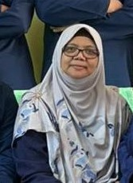
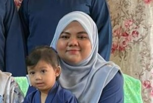
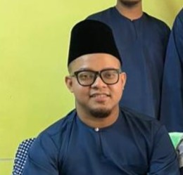
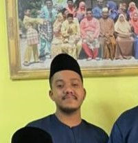

|  | My mother name is Rashidah Binti Ibrahim and my mother is a retired teacher.My mother is very caring,loving and very passion. My mother is my favourite person. she is my world. |
|  | This is my sister Nur Aina Binti Daud. She is a very loving sister and also very strict person. my sister is my role model because she is a teacher and have a very brave personality. she is the oldest among our siblings and she is very matured and smart. i hope i can be as smart as my sister one day.she is married and in this picture she is holding her first daughter Alisa who is very cute |
|  | This is my brother in law and my sister, husband Ibzaimai Bin Ibrahim. I used to call my sister husband abang man.Abang man is very caring person. he always ask me if am okay, always check on me while im away and is very soft hearted man. abang man has help me a lot in my journey to continue my study in UiTM in Kedah. she is very diligent and hardworking. i inspire a lot from him and i hope i can be as caring as him. |
| This is my brother Muaz Bin Daud. he is a nurse and currently working in Kelana Jaya, Selangor. as a person he is very quite.He do not usually the one who talk a lot but in my family he take care of everyone. as an oldest son and a nurse he always give an advice a about our family health and always check on my mother health to ensure that our mother is always healthy. he is very mysterious person but kind of nice. he sometimes ask thing about me but its very rare. As an oldest brother he done his job very good | |
|  | This is my second brother Alif Bin Daud. he is a very hardworking person. he is the one in the family who do everything and very diligent. I love how he always finish everything that he is doing and make sure he give everything into it. he is currently working as salesman in Selangor and i wish him a very good luck acheive his sales goal. |